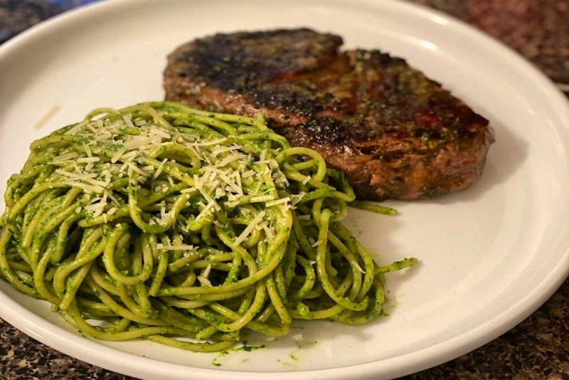
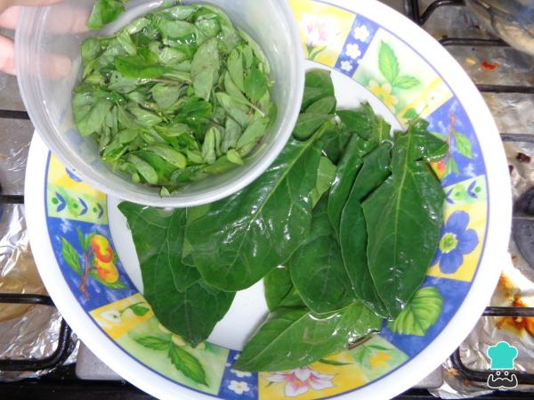
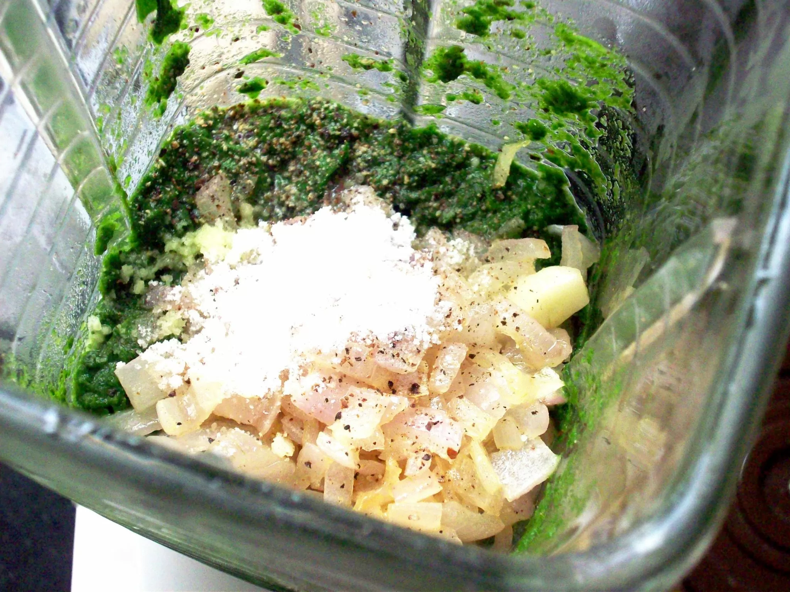
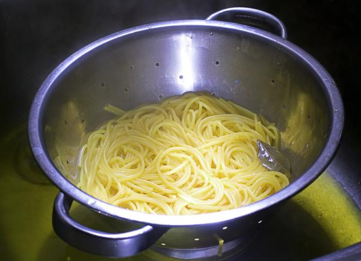
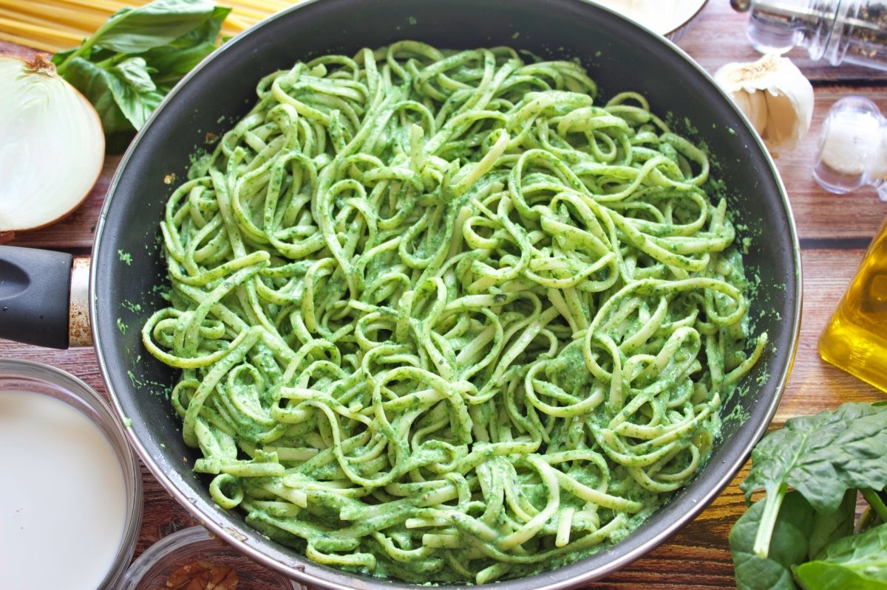

Sabor Criollo
Sabores peruanos que conquistan el corazón
Sabores peruanos que conquistan el corazón

Los tallarines verdes son un plato inspirado en la cocina italiana, adaptado al estilo peruano con albahaca, espinaca, queso fresco y un toque de leche. Cremosos, aromáticos y siempre deliciosos.




Aprende a preparar unos deliciosos tallarines verdes con un sabor inconfundible.